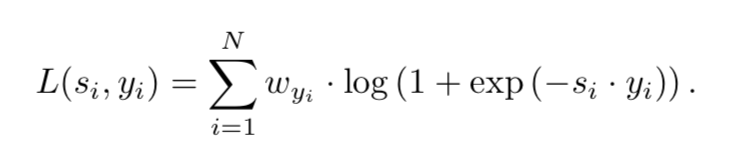

Learning non-maximum suppression
这篇论文的主要研究内容从论文题目就可以比较直观地看出来，作者想利用神经网络本身来实现NMS的功能将网络实现完全的end2end。针对目前检测模型固有的特性（如region proposal），作者提出要实现这样的功能需要从两个角度来做，一是从loss的角度对同一个物体多次检测加以惩罚，二是利用object的近邻信息来辅助网络来学习是否对同一个物体进行了多次检测，整篇文章也是从这两个角度分析。
- Loss：本文中作者设计的Loss Function，有一些细节在论文中没有提及，可以参考CVPR2016的End-to-end people detection in crowded scenes论文中的Hungarian Loss，利用GT和DT作为图的节点，GT和DT之间的距离、两者是否overlap等信息作为边的权重构造一个完整的图，利用匈牙利算法计算最大（小）匹配（对应上图的matching），yi {-1,1}就是匹配的结果,代表第i个DT是否被匹配上，Si为DT新的score信息，对应上图中的new detection score：

- GossipNet：作者设计的一个网络结构来整合DT的近邻信息来辅助判断（上图的整个示例），GNet主要有多个Block组成（论文中用的是16个），每一个block的基本结构如下图，因为是要整合近邻的信息，那么首先第一步是对于一个DTi，对于IoU(DTi, DTj) > 0.2时，认为DTj属于DTi的近邻。第二步是构造下图的pairwise context，这个又可以分成两块，一块是concat(DTi, DTj), 另一块是两个DT之间的固有信息比如IoU、L1 distance、L2 distance、置信度等等，所有这些信息构成一个vector作为含3层FC的MLP网络的输入，输出就是pairwise context的另一部分。最后pairwise context信息经过多层FC和Pooling作为下一个block的输入:

本博客所有文章除特别声明外，均采用 CC BY-NC-SA 4.0 许可协议。转载请注明来自 Out of Memory！